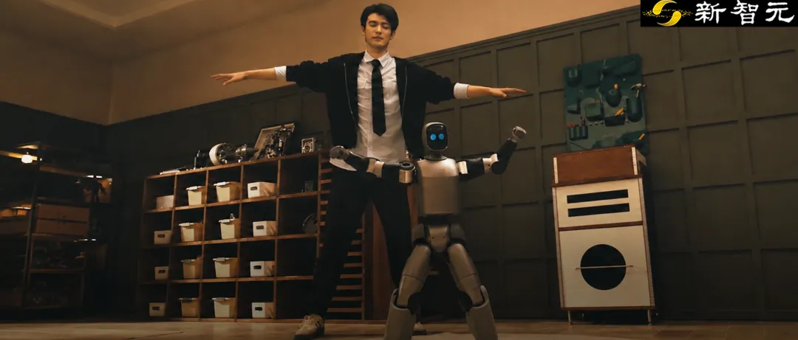
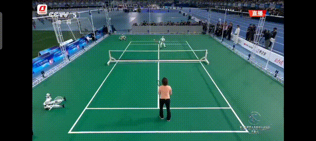
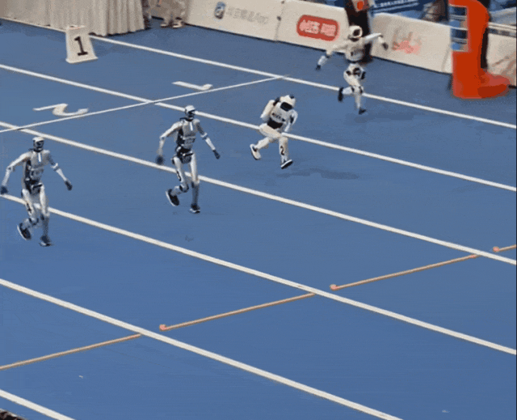
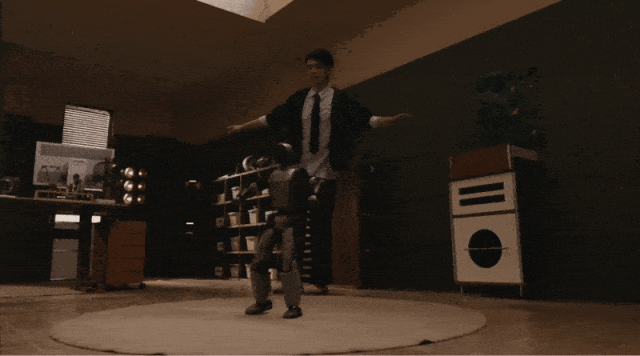
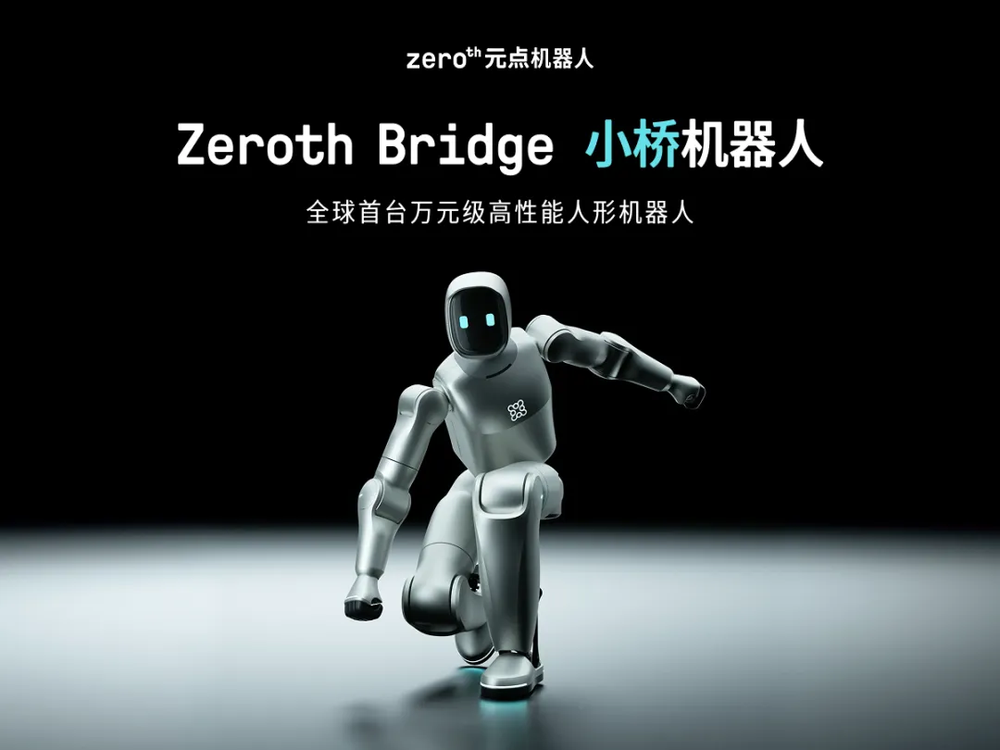
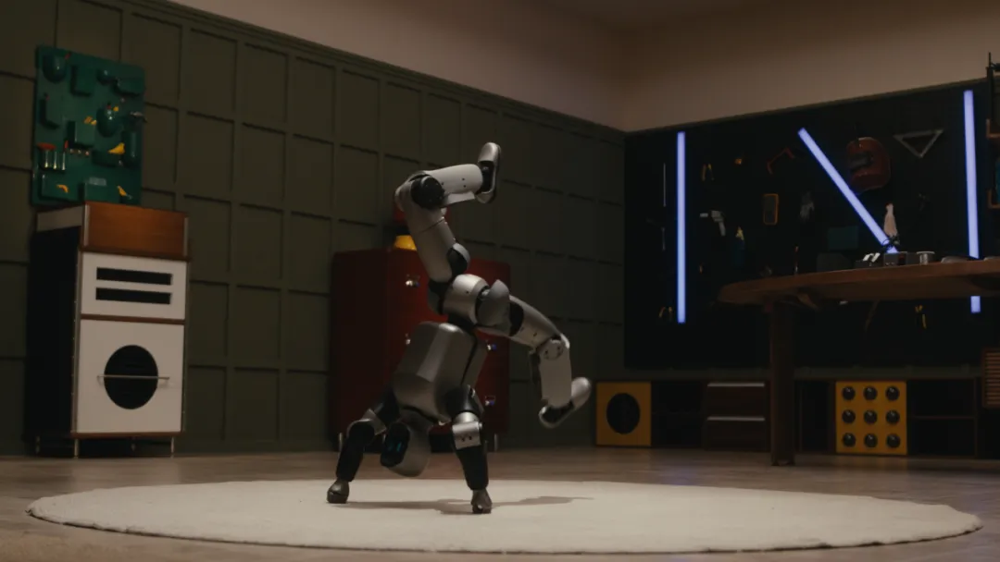
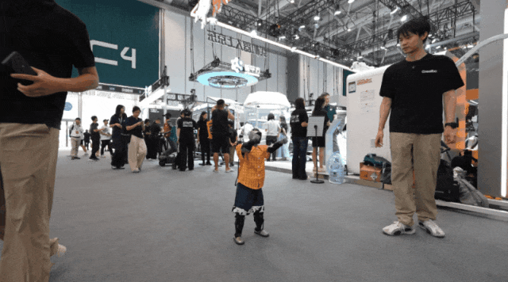
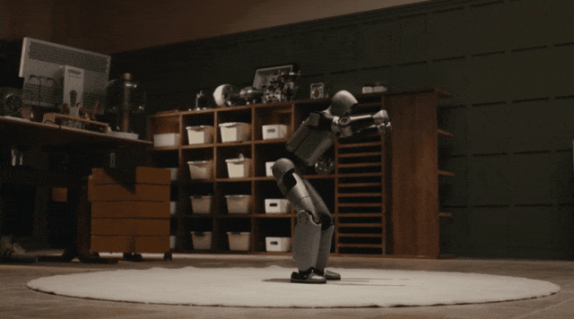
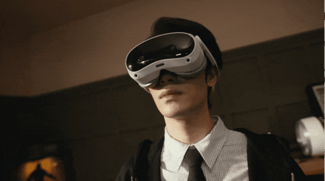
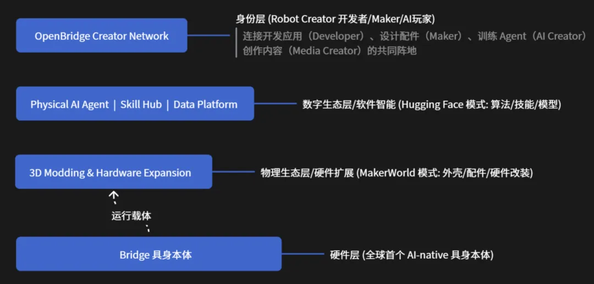

新智元报道
新智元报道

最近，人形机器人运动会可太火了。
第二届世界人形机器人运动会刚在北京「冰丝带」落幕，2056台机器人，参加了1301场比赛。
有的机器人跟世界冠军郑洁打网球；有的机器人跟奥运冠军丁宁打起了乒乓球。

亮点最多的还是百米。几位飞毛腿冲过终点线时快到「飞」出重影，得靠终点外的缓冲垫才能减速下来。

看完比赛，热血沸腾的你，也想入手一台？然后才发现，事情没那么简单！
好消息是，人形机器人这两年的价格掉得是真快。曾经的百万级、几十万级，如今三万上下就能买到能跑能跳的整机，万元内的机型也已经出现。
坏消息是，性能的差异跟售价一样大，到了真正买得起的机型，好像都只能走走路了，一下就没了大机器人强劲的性能。你想买一个高性能机器人，还得好几万起步。
够便宜的，性能和开放度都没留余量；性能够猛的，价格线还在三万往上，而且大多不开放底层接口，你能开发的技能有限；真正性能够强劲，还能二开的，基本都得要十万往上了。
但今天，有人把这不可能三角一起端上来了！
8888元，万元级，足够轻巧，只有88厘米、13公斤重；但是性能依然强劲，能做到后空翻、高性能舞蹈、遥操应有尽有；还支持二开，而且有开发者开源生态同时发布，可以彼此共享。
9月2日，全球首个万元级高性能人形机器人——元点机器人Zeroth Bridge「小桥」正式发布。

88厘米高，13公斤重，一拎即走，金属外壳，支持全量二次开发，会后空翻。
极客版日常价12888元，首发期间统一专属价——8888元。
而且从诞生的第一天起，小桥就是为OpenBridge开发者全开源生态而生的。
人形机器人的「安卓时刻」，从今天开始。


这次，小桥一口气出了两个版本。
Bridge「小桥」极客版，日常价12888元，支持全量二次开发，纯硬件无附加服务权益，金属外壳，专为硬核极客打造。9月2日首发期间，统一专属价8888元。
家庭版在极客版基础上增加避障导航、操作物体等能力，换柔性织物外观，适配家庭场景，价格待公布。
8888元买不到一台高配MacBook Pro，但能让你拥有一台具备高动态运动能力、支持全身遥操、底层接口全开放的人形机器人。
对很多人来说，这是第一次真正拥有一台高性能机器，也是第一次能亲手训练它。
这个价格能做到，靠的是人形机器人界一条很少被提起的规律——决定成本的第一变量，是体重。

业内做轻量化，常规做法往往是妥协。机器做轻，关节出力就做小，电机、减速器等部件跟着一路降规格。
但元点Zeroth打破了这种零和博弈。他们坚持一条铁律：做小的同时，绝不减小力矩，性能必须满血。
这依赖于关节模组的极大突破。通过底层材料创新与制造工艺创新，成功在极限缩小的体积内，保持了强悍性能。
正是因为这颗核心动力源做到了「小体积、大爆发」，才引发了整机链路的正向革命。电机、减速器、结构件、电池及散热系统实现了更高密度的系统集成。
反过来也一样。一米八、六七十公斤的全尺寸本体，每多一公斤自重，都在给下游所有零件加价。
这样考虑的话，目前几十万级的属于工业和科研，十万级是中大型通用机型，三万级是教育和开发者机型，万元级刚被撬开一条缝，眼下多是儿童陪伴和科技潮玩。
而且，还有一件最重要的事：要开发者级的性能，也要一整个能让成果流通起来的生态。

价格只是第一道门槛。以往的大型人形机器人还有第二道，要多人协作、要专用场地和设备，才能完成一次简单的部署。
小桥要解决的就是这个问题，单人可操作、随时随地操作，真正的开发者友好。

小桥表演翻跟头
整机质量：13kg
一个成年人抱起来就能走，不需要龙门架，也不需要第二个人搭手。后备箱、宿舍、客厅，搬运、部署、训练、调试一个人全包。
可以说，一个人就是一个具身智能研究所。
整机高度：88cm，肩高73cm
站起来大约到成年人腰部，正好够着桌面和地面附近的操作和小物体交互，也没有大型机器人那种压迫感。
髋高50cm，肩宽13cm，臂长30-40cm
髋高决定重心和安全边界，摔一下砸不坏设备，也伤不了地板；13cm的肩宽配30-40cm的手臂和二指夹爪，在不牺牲自碰撞空间的前提下，把手臂对工作空间的侵占降到最低。
还有一道门槛，藏得更深。
具身智能是靠试错学出来的，强化学习的本质就是摔。仿真里随便摔，一到真机上，三万五万的家伙，谁敢让它自由落体？
实验室里最常见的画面就是，机器被龙门架吊着，两三个人围一圈，手悬在半空随时准备接。
每接住一次，就是一次没发生的学习。
但有了小桥，你不仅敢摔、敢拆，更敢大胆试错。
13KG的小桥只是个高级玩具吗？
那你大错特错了。
它能稳定站立、行走、小跑，也能完成后空翻、高难度跳跃、上半身舞蹈、全身固定舞蹈这些高动态动作。

每一个动作都干脆利落，起跳爆发猛，落地稳当当。
说一句反常识的，小机器做后空翻，其实比大机器更难。
大机器不在乎重量的情况下，可以选体积更大扭矩更大的电机，小机器人因为局限于体积跟重量，只能选扭矩有限的电机，面临的是性能跟体积的矛盾。
小身板做这个动作，容错窗口窄得多。人形机器人怎么在「做小」的同时保证「性能不减」？
元点Zeroth给出的答案是：绝不在力矩上妥协，靠技术硬碰硬地突破。
这份底气，来自他们全自主研发的核心动力源——50N·m高功率密度关节模组。
它不是靠「减配电机」来减重，而是通过材料创新与工艺突破，在缩小体积的同时保持了满血性能。
关节模组之于机器人，就像关节和心脏之于人，它决定了机器人是否稳健、灵动、自如。
具体的工程账是这么算的：
减重约15%。通过结构集成创新与传动链路整合，把模组内腔空间极致压缩，同时采用轻量高强度材料。 峰值转矩密度提升约20%。结合新型磁路拓扑结构与先进制造工艺，相比传统永磁直流无刷电机。 转矩控制精度≤3%。靠自适应控制、扰动观测、在线参数辨识这一整套算法，精准补偿行星减速机构的背隙误差，让输出力矩稳定一致；位置控制与爆发力之间还能自由切换。
小桥在电气层还针对小尺寸、大电流、高带宽做了专项优化，确保瞬时爆发不疲软。
这些数字最终都指向同一件事，你能折腾它多少次。
在交互和扩展性上，小桥给极客留足了想象空间。
传统的机器人控制往往要敲一堆代码，而小桥自带完整的动捕与遥操能力。除了最基础的手柄遥控行走、跳舞，小桥的底层接口完全开放，VR头显、动作捕捉设备、各类手柄均可自由外接。
戴上VR眼镜，穿上动捕设备，你的每一次抬手、转身、屈膝，都能实时映射到小桥身上。
而且是全身遥操，不是几个预设动作的排列组合，跨房间、跨楼层依然跟手。
想怎么控，你说了算。

面向高校科研和高阶开发者，小桥还支持搭配EDU增强包。
硬件上预留了丰富接口，可外插更高算力的计算平台、3D激光雷达、深度相机、IMU、多模态夹爪、UWB室内定位；软件上，本地侧强化学习的基础运控部署算法及工程全部就绪。
即插即用。
你可以用这些增强模块，在小桥上开发自主导航、跟随避障、复杂地形穿越这类高阶能力。
今年整个圈子都在念叨一句话：人形机器人缺一个安卓。
但安卓当年给出的，其实是两样东西。
第一样，是买得起的机器。
2008年安卓刚出来时，没人觉得它比iOS好用，可一两千块的安卓机很快铺开了几亿台。
开发者看到这么大的盘子，才愿意为它写App；App越多，用户越多；用户越多，愿意写App的开发者又越多。
生态就是这么滚起来的。先有便宜的机器，才有生态。
人形机器人的这一样，8888元刚刚补上。
第二样，是让成果能流通的地方。
软件这边其实一点都不缺。OpenLoong社区两万多名开发者，乐聚的OpenLET开源数据集，HuggingFace的LeRobot Humanoid，代码有，数据集有，训练框架也有。
可每家都在造自己的那一套：自己的接口，自己的数据格式，自己的运控框架。这家训好的抓取技能，挪不到那家的机器上；这个团队踩平的坑，那个团队还得从头再踩一遍。
大量研发资源，就这么消耗在重复造轮子上。而这，正是OpenBridge要补的。
OpenBridge是首个面向具身智能领域开发者的全开源生态，让全球创作者共建、共享、共创机器人能力。
整个生态分四层。

硬件层：机器人的「标准安卓手机」
小桥作为全球首个AI-native具身本体，原生适配OpenBridge，统一了传感、运动、数据输出接口，是一个标准化、稳定、低成本的运行载体。
你不用先去解决「造机器人」这个问题，全部精力都可以放在「让机器人变聪明」上。
物理生态层：机器人的MakerWorld
外壳、配件、雷达支架、各种奇思妙想的物理改装，谁都能画、谁都能打印、谁都能分享。
一台机器人长什么样、挂什么东西，从此不由厂商的模具决定。
数字生态层：机器人的Hugging Face
这是OpenBridge最激动人心的部分。
以往，每个实验室都在闷头训练自己的机器人怎么抓杯子。
而在Skill Hub技能广场，开发者可以把训练好的模型、数据和动作链封装成标准化的Skill，上传分享，别人下载、部署、接着改。
这就好比机器人的App Store。
你的机器人不会后空翻？去下载一个。
一次开发，生态共享。真实世界产生的数据与经验，会持续推动小桥的能力进化。
身份层：OpenBridge Creator Network
生态的核心终究是人。四种Creator待在同一个阵地里：
Developer开发应用，用底层接口写新算法；
Maker设计配件，为小桥做外壳、支架和各种物理扩展；
AI Creator训练Agent，为机器人注入大模型，让它拥有灵魂；
Media Creator创作内容，把这一切拍出来、讲出来、传出去。
安卓改变了「谁来定义一部手机」。
OpenBridge想改变的是「谁来定义一台机器人」。
未来，一台小桥能做什么，元点机器人说了不算，整个生态里千千万万个人说了算。
8888元的定价，和OpenBridge全开源生态，本质上是同一件事的两面。
价格负责让机器跨过门槛，真正走进足够多的开发者手里；生态负责让这些人的心血和成果不至于各自烂在硬盘里。
少了哪一半，都无法运转。
只有便宜机器没有生态，是一堆各玩各的玩具；只有生态没有便宜机器，是一个没人来的广场。
Zeroth Bridge「小桥」的发布，也不只是一次新品首发，它更像一封发给全球极客、高校师生、AI研究员、创客玩家的英雄帖。
物理和代码的基础设施，小桥已经铺好了。
9月2日的发布，只是把大门推开了一条缝。
接下来一台小桥到底能干什么，它的进化极限在哪里？
答案已经不在元点的实验室里，而在买走它的千千万万个人手上。
现在，你只需要把脑子里那个真正好的idea，变成被世界看见的成果。
从此，人形机器人不再高高在上，不再闭门造车。
人形机器人的全民时代，从踏上这座「小桥」开始。
9月2日，Zeroth Bridge「小桥」正式发布，8888元极客版首发抢购通道同步开启！
说不定下一个后空翻，就是你上传的。
编辑：Aeneas 摩西